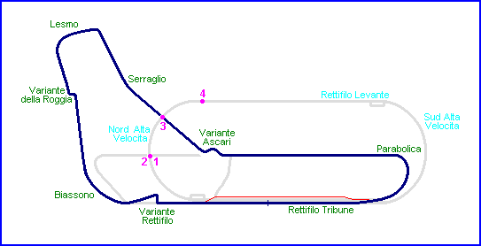
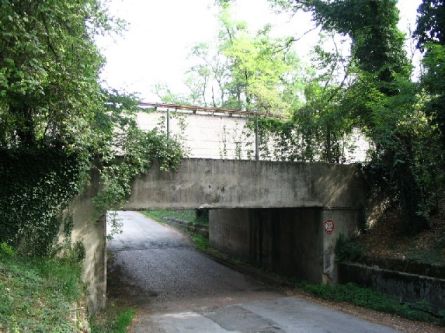
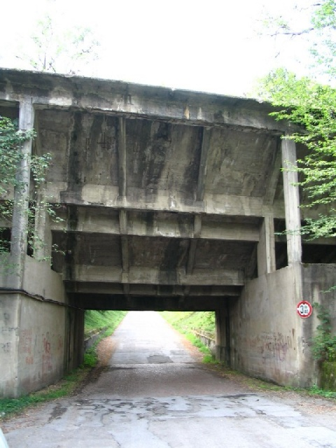
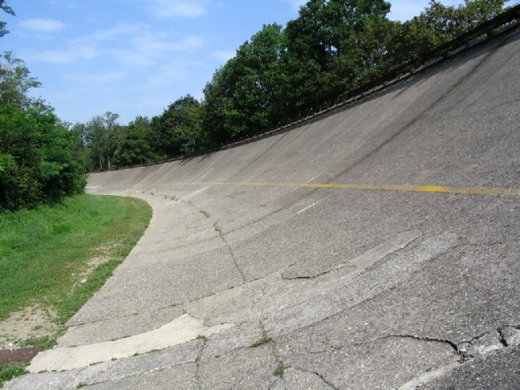
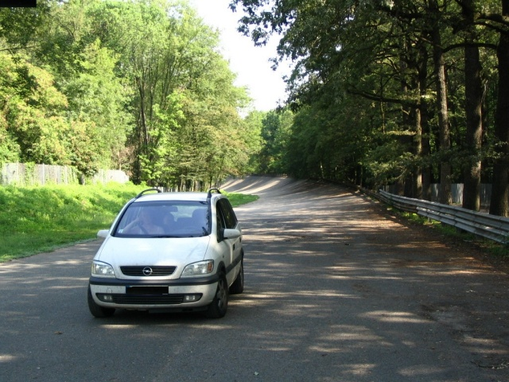

| Monza, Italy Type:
Permenant Road Course |
|
| Monza, Italy Type:
Permenant Road Course |
|

Numbers on map indicate the location where the photographs were taken.

Pirelli track passing under the banking. South side.

Same crossing. North side.

North banking, near Serraglio. Where Jean-Pierre Sarti had his fatal accident!

Return to racingcircuits.net's Photo Archive Main Index
| Related Information | ||
| Photographs of Monza by Steve Bolt, Aug. 1994 | ||
| Photo tour: Monza - Secret and Forgotten on www.gdecarli.it | ||
Photographs ©Michel Marti. Reproduced here with kind permission.